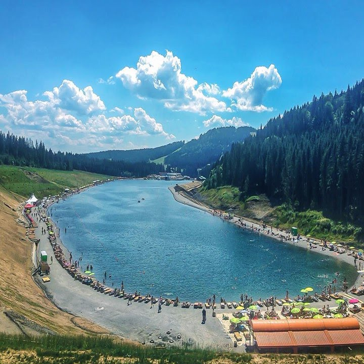

Озеро Синевир
- Локація: Закарпатська область, Міжгірський район;
- Спосіб розваг: екскурсії, фотографії, пікніки
Озеро Синевир, розташоване на висоті 989 метрів над рівнем моря в Міжгірському районі Закарпатської області, заслужено вважається однією з найбільш вражаючих природних пам’яток України. Це найбільше гірське озеро країни з площею водного дзеркала близько 5 гектарів і максимальною глибиною до 22 метрів.
Синевир відомий як “Морське око” через свою унікальну форму та кристально чисту воду, яка змінює свій колір від блакитного до темно-зеленого залежно від пори року та освітлення. Озеро утворилося близько 10 тисяч років тому в результаті потужного зсуву, який перекрив потік гірської річки, формуючи природну запруду.
Легенди, що овіюють Синевир, додають місцю особливого шарму. Найвідоміша легенда розповідає про трагічне кохання доньки місцевого боярина Синя і простого пастуха Вира. За переказами, батько дівчини не схвалив їхні стосунки та наказав убити юнака. Сльози Сині наповнили котлован, утворивши озеро.
Сьогодні Синевир є частиною Національного природного парку “Синевир”, що забезпечує охорону цього унікального природного комплексу. Парк пропонує облаштовані шляхи та оглядові майданчики, звідки відкриваються захоплюючі види на озеро та навколишні Карпати.
Озеро Молодості в Буковелі
- Локація: Івано-Франківська область, курорт Буковель
- Спосіб розваг: купання, водні види спорту, сонячні ванни
Озеро Молодості — це візитівка курорту Буковель, розташованого в Івано-Франківській області. Штучно створене озеро, завдяки своєму ідеальному розташуванню у гірській місцевості та розвиненій інфраструктурі, є популярним місцем для літнього відпочинку серед туристів та місцевих жителів.
Розмір озера вражає — площа водного дзеркала складає близько 6,8 гектарів, що робить його одним з найбільших штучних озер в Україні. Глибина озера сягає 15 метрів, що забезпечує відмінні умови для купання та різноманітних водних видів спорту.
Особливо привабливим Озеро Молодості робить його багатофункціональне використання. Літом тут можна займатися віндсерфінгом, водними лижами, катанням на каное або просто насолоджуватися плаванням в чистій воді. Крім того, на берегах озера облаштовані пляжі з лежаками та зонами для пікніка, де відпочиваючі можуть розслабитися під сонцем.
Для тих, хто шукає більш активного відпочинку, пропонуються екскурсії на велосипедах та піші походи по мальовничих гірських маршрутах навколо озера. Також, озеро є популярним місцем для фотографів завдяки своїй захоплюючій красі та ідилічним краєвидам.
Ворожеска (інша назва Тритон)
- Локація: Прикарпаття, біля села Ворохта;
- Спосіб розваг: походи, медитація, фотографія.
Озеро Ворожеска, відоме також під назвою Тритон, є однією з прихованих жемчужин Карпат, розташованою у віддаленому куточку Прикарпаття, неподалік від села Ворохта. Високо в горах, на висоті понад 1500 метрів над рівнем моря, це маленьке озеро зачаровує своїм спокоєм і незайманою красою, стаючи ідеальним місцем для тих, хто шукає усамітнення та контакту з природою.
Відокремлене від основних туристичних шляхів, озеро Ворожеска приваблює мандрівників своїми легендами та містичними історіями, які переплітаються з місцевими традиціями. Вода в озері прохолодна і кристально чиста, оточена густими карпатськими лісами, що створює неповторну атмосферу ізоляції від зовнішнього світу.
Озеро Ворожеска часто асоціюється з легендами про водяних духів, що, за переказами, оберігають це місце. Саме такі історії надають озеру особливого шарму та роблять його популярним серед туристів, які прагнуть засвідчити щось надзвичайне та містичне.
Озеро Журавлине (Мертве озеро)
- Локація: Львівська область;
- Спосіб розваг: походи, екологічний туризм, спостереження за птахами.
Озеро Журавлине, також відоме як Мертве озеро, є однією з найзагадковіших природних атракцій Карпат. Розташоване у Львівській області, це невелике озеро приваблює туристів своїми унікальними характеристиками та містичними історіями, що оточують його походження та назву.
Журавлине має відносно невеликі розміри, але його головною особливістю є відсутність видимої живої акватичної фауни, звідки і походить назва “Мертве озеро”. Вчені пояснюють це унікальним хімічним складом води, що не сприяє життю більшості видів водних організмів. Озеро оточене густими лісами та карпатськими горами, що створює ізольоване та тихе місце, ідеальне для роздумів та споглядання.
Одна з легенд розповідає, що озеро утворилося на місці давнього села, яке було затоплене в результаті природної катастрофи. Вважається, що озеро накопичило в собі енергію минулого, що і призводить до відчуття містичної присутності серед відвідувачів
Озеро Драгобратське (Івор)
- Локація: Закарпатська область
- Спосіб розваг: гірські походи, кемпінг, фотографії
Озеро Драгобратське, відоме також під назвою Івор, є одним із наймальовничіших високогірних озер Карпат. Розташоване на висоті понад 1700 метрів над рівнем моря, воно є частиною курорту Драгобрат, знаменитого своїми гірськолижними трасами та неперевершеними пейзажами.
Озеро оточене густими хвойними лісами та високими гірськими вершинами, що створює враження ізольованості та спокою. Вода в озері прохолодна навіть у літній період, відбиваючи глибокий синій колір неба та зелень околиць. Це місце притягує туристів, які шукають усамітнення та можливість насолодитися недоторканою природою.
Місцеві гіди часто розповідають про формування озера, яке відбулось внаслідок природних процесів зсуву грунтів та затоплення долини гірськими водами. Озеро вабить не лише своїми пейзажами, але й кристально чистою водою, що є домом для різноманітних видів альпійських рослин та дрібних водних тварин.
Озеро Геришаска
- Локація: Закарпатська область, Рахів
- Спосіб розваг: походи, кемпінг, фотографії
Велична панорама природного творіння чіткої прямокутної форми відкривається з Апшинецького хребта. Льодовикове високогірне озеро Геришаска (інша назва Догяска) причаїлося на схилі гори Догяска в оточенні вершин Свидовецького заповідного масиву, та місце його розташування на 1500 метрів перевищує рівень моря.
Площа водойми – 1.2 га. Озеро неглибоке – до дна тут трохи більше 1 метра, але навіть влітку вода не прогрівається вище 11°C. Шлях до озера досить непростий, спуски до води з хребтової стежки урвисті, але винагородою відважним туристам стане чарівна пейзажна гармонія водойми з заростями осоки, зеленими луками та гірськими вершинами.
Озеро Бребенескул
Озеро простягається на 134 метри та має капризний норов – природні катаклізми тут зовсім не рідкість.Температура кришталевої водойми глибиною 3 метри, навіть в літній період не перевищує 13°C, проте це не зупиняє відчайдухів від купання.
Саме за незабутніми враженнями з’їжджаються численні туристи до берегів Бребенескулу, народженого від гігантської льодовикової брили, яка під гребенем Чорногірського хребта викарбувала велетенську чашу (кар) і залишила на її дні пам’ять про себе у вигляді холодного озера.